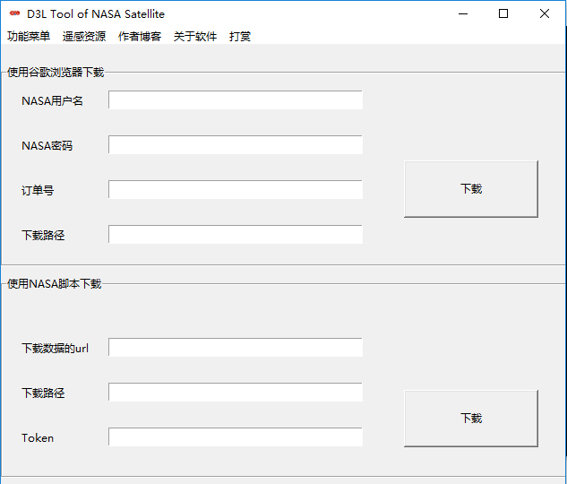
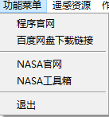
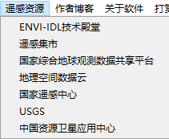
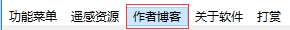
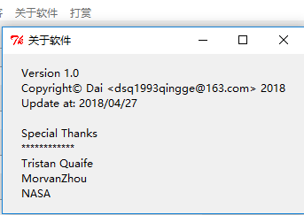
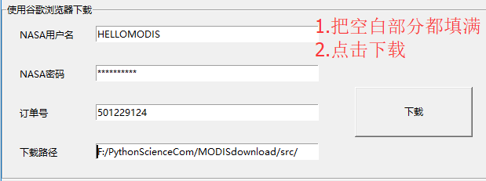
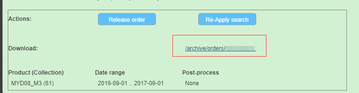
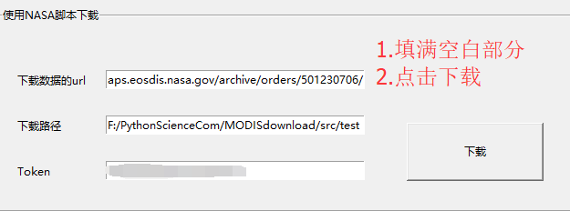
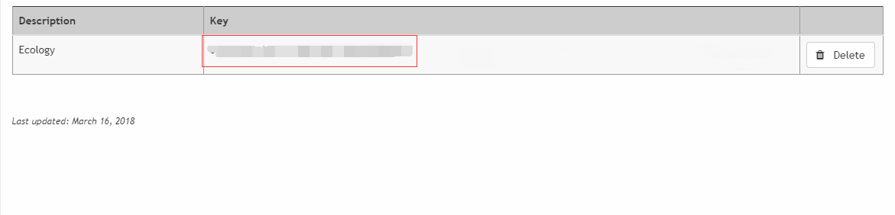
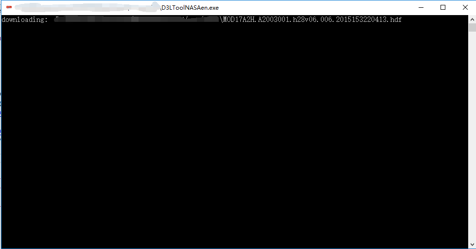

NASA卫星的D3L工具用户指南（v2.0）
戴先生编写。软件和用户指南将继续根据使用者建议进行修改。
v2.0 主界面

双击 D3LToolNASA.exe 启动（单文件，无需安装 Python；macOS/Linux 可从 GitHub Releases 下载或 pip install d3ltool）。
左侧为检索面板，右上为检索结果，右下为下载任务队列。
1 登录
菜单"设置 → 登录 Earthdata"，输入 NASA Earthdata
账号密码（免费注册）。检索不需要登录，下载需要。凭据只保存在本机 ~/.netrc，不会上传。
2 检索
左侧依次选择：产品组与产品（或切换"自定义产品"输入任意 CMR short_name）、版本（留空自动取最新）、
开始/结束日期；区域支持两种方式——点击下方正弦瓦片地图选择 MODIS/VIIRS 瓦片（可多选，也可直接输入
h04v03，或用经纬度"定位到瓦片"），或填写经纬度范围 bbox（MERRA-2 等点/栅格数据）。
点击红色"检索"按钮，结果会出现在右上表格中。
3 下载
在结果表中勾选需要的文件，点击"加入下载队列"。右下任务表实时显示每个文件的进度与速度， 支持暂停/继续/重试；已完成的文件再次下载会自动跳过，中断的文件自动断点续传。 下载目录、并发数与代理在"设置"中配置。
4 命令行
pip install d3ltool 后：
d3ltool search VNP46A1 --start 2020-03-01 --end 2020-03-31 --tile h04v03
d3ltool download VNP46A1 --start 2020-03-01 --end 2020-03-31 --tile h04v03 --dest D:/data
d3ltool search M2T1NXSLV --start 2019-08-01 --end 2019-08-31 --bbox 100 20 120 40
5 网站与遥感资源菜单
"网站"菜单提供程序官网、作者博客与 NASA 官方入口；"遥感资源"是笔者整理的遥感资源清单 （ENVI-IDL技术殿堂、国家遥感数据与应用服务平台、国家综合地球观测数据共享平台、地理空间数据云、 国家遥感中心、USGS Landsat、中国资源卫星应用中心）；"帮助"菜单提供打赏与关于信息。语言可在"语言"菜单切换中文/English。
以下为 v1.0（2018）历史文档，仅作存档 —— v1 已停止维护
主界面（v1.0）

双击D3LToolNASA.exe。
1 功能菜单

点击功能菜单。程序官网是打开D3L Tool of NASA Satellite的官网。百度网盘链接提供了另一个下载方式。NASA官网则会在浏览器里打开NASA卫星（'https://ladsweb.modaps.eosdis.nasa.gov/'）的网站。 NASA工具箱是NASA官方提供的一些工具和服务。
2 遥感资源

点击遥感资源。这是一个笔者整理的一些遥感资源清单。
3 作者博客

点击作者博客。这样会在你的浏览器里打开我的博客。
4 关于软件

点击关于软件。提供一些关于软件的信息。
5 打赏
点击打赏。即可打赏软件作者。
下载NASA卫星影像
1 谷歌浏览器
首先, 你的电脑里必须安装了谷歌浏览器，你才能使用这个下载功能。

其次, 你必须有一个NASA Earthdata的账户。根据你的账户填写用户名和密码。

你可以获取你订单的ID号。而这里的下载路径主要是用来存储你所下载数据的清单，但是无法将NASA卫星影像下载到该路径下。如果你想改变数据存储的路径，请在你的谷歌浏览器里进行设置。
最后，你只要点击下载就可以开始你的数据下载了。
D3LToolNASA.exe会打开一个谷歌浏览器并且下载数据。
2 NASA脚本
我已经将laads-download-data.py打包成一个叫做nasa.exe的可执行文件。如果你对命令行非常熟悉的话，你可以直接用nasa.exe和CMD来下载NASA卫星影像.

首先, 你必须有一个NASA Earthdata的应用密钥。

然后，你必须获取到你的订单的url路径。
最后，你只需要点击下载，等待数据下载完成即可。

D3LToolNASA.exe即将下载数据。